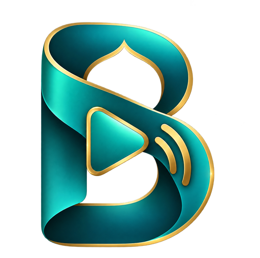

BabaCutBabaCut is a fast editor for short videos: segments, tile mode, mosaic, overlays and on-device captions – exported in up to 4K. No account, no upload, no ads.
BabaCut ist ein schneller Editor für Kurzvideos: Segmente, Kachel-Modus, Mosaik, Overlays und Untertitel auf dem Gerät – exportiert in bis zu 4K. Kein Konto, kein Upload, keine Werbung.
BabaCut ویرایشگری سریع برای ویدیوهای کوتاه است: بخشها، حالت کاشی، موزاییک، لایهها و زیرنویس روی دستگاه – با خروجی تا 4K. بدون حساب، بدون آپلود، بدون تبلیغ.
Get it on Google PlayBei Google Play ladenدریافت از Google Play See featuresFunktionen ansehenدیدن امکاناتStart, pause, continue. Reorder or delete any segment later – captions and sound follow every cut.
Starten, pausieren, weiter. Segmente später umordnen oder löschen – Untertitel und Ton folgen jedem Schnitt.
شروع، مکث، ادامه. بخشها را بعداً جابهجا یا حذف کن – زیرنویس و صدا هر برش را دنبال میکنند.
React to any video: your camera as a square, 3:4 or circle tile with the signature rainbow frame.
Auf jedes Video reagieren: deine Kamera als Quadrat, 3:4 oder Kreis mit dem Signatur-Regenbogenrahmen.
به هر ویدیویی واکنش نشان بده: دوربین تو بهشکل مربع، ۳:۴ یا دایره با قاب رنگینکمان امضایی.
Two, three or four tiles – each one camera, image or video, with zoom, pan and rotation.
Zwei, drei oder vier Kacheln – jede Kamera, Bild oder Video, mit Zoom, Verschieben und Drehen.
دو، سه یا چهار کاشی – هر کدام دوربین، عکس یا ویدیو، با زوم، جابهجایی و چرخش.
Speech recognition runs locally. Eleven styles, karaoke included, full editor for words and timing.
Spracherkennung läuft lokal. Elf Vorlagen, Karaoke inklusive, vollständiger Editor für Wörter und Timing.
تشخیص گفتار محلی اجرا میشود. یازده سبک، شامل کارائوکه، ویرایشگر کامل برای کلمات و زمانبندی.
Images, text, picture-in-picture videos with their own volume, nine color filters, platform guides.
Bilder, Text, Bild-im-Bild-Videos mit eigener Lautstärke, neun Farbfilter, Plattform-Hilfslinien.
عکس، متن، ویدیوهای تصویردرتصویر با صدای مستقل، نه فیلتر رنگ، راهنمای پلتفرم.
Pick the resolution, see the file size first. Export backups keep your last projects for 7 days.
Auflösung wählen, Dateigröße vorab sehen. Export-Sicherungen bewahren deine letzten Projekte 7 Tage auf.
وضوح را انتخاب کن و اندازهٔ فایل را پیش از ذخیره ببین. پشتیبانهای خروجی آخرین پروژهها را ۷ روز نگه میدارند.